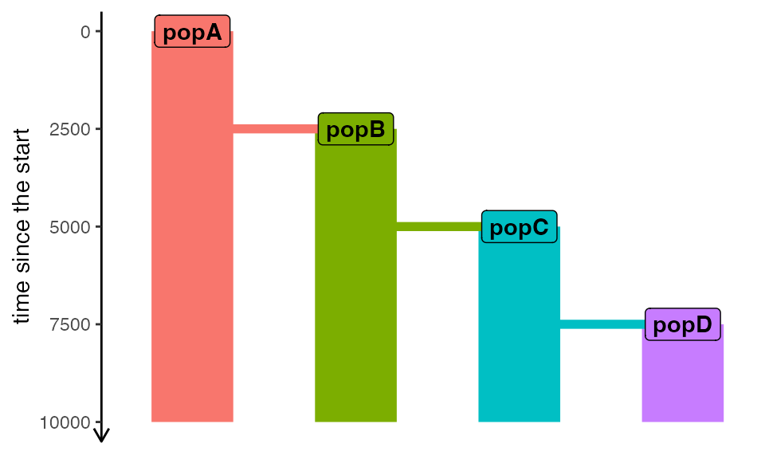
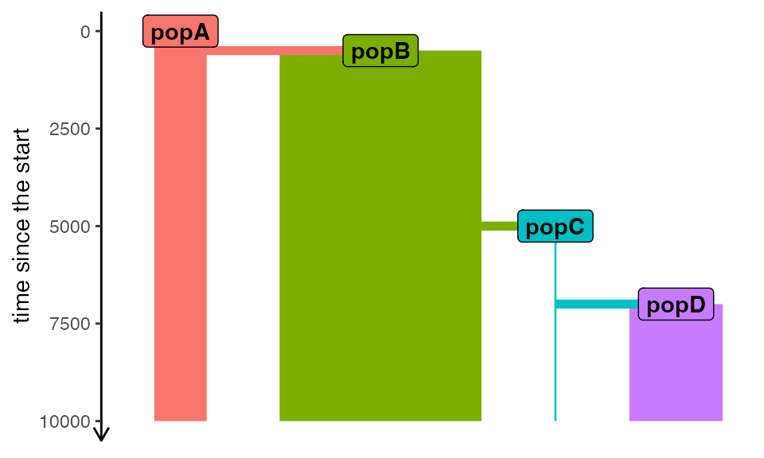

Defining scaffold models
vignette-02-scaffold-models.RmdIntroduction
Let’s return to our introductory
example. The “scaffold” model we defined in that vignette was
created using a built-in function tree_model(), which
accepts a phylogenetic tree as input and converts it into an appropriate
slendr demographic model which demografr later uses as
a scaffold for ABC inference.
We begin by loading all required packages, and setting up parallelization for our inference using the package future:
library(dplyr)
library(readr)
library(slendr)
library(demografr)
# my Mac has 10 cores, feel free to adjust this
library(future)
plan(multisession, workers = availableCores())Load observed summary statistics computed from “sequenced” real data:
diversity_df <- read_tsv(system.file("examples/01_diversity.tsv", package = "demografr"))
divergence_df <- read_tsv(system.file("examples/01_divergence.tsv", package = "demografr"))
observed <- list(diversity = diversity_df, divergence = divergence_df)Define tree-sequence-based summary functions:
compute_diversity <- function(ts) {
samples <- ts_samples(ts, split = TRUE)
ts_diversity(ts, sample_sets = samples) %>%
mutate(stat = paste0("pi_", set)) %>%
select(stat, value = diversity)
}
compute_divergence <- function(ts) {
samples <- ts_samples(ts, split = TRUE)
ts_divergence(ts, sample_sets = samples) %>%
mutate(stat = sprintf("d_%s_%s", x, y)) %>%
select(stat, value = divergence)
}
functions <- list(diversity = compute_diversity, divergence = compute_divergence)Scaffold model from a tree
To recap, this is how we built that model from a phylogenetic tree:
model1 <- tree_model(tree = "(popA,(popB,(popC,popD)));", time_span = 10000)
plot_model(model1)
After specifying the priors we can plug this model into the ABC inference pipeline:
priors <- list(
Ne_popA ~ runif(1, 10000),
Ne_popB ~ runif(1, 10000),
Ne_popC ~ runif(1, 10000),
Ne_popD ~ runif(1, 10000),
Tsplit_popA_popB ~ runif(1, 3000),
Tsplit_popB_popC ~ runif(3000, 6000),
Tsplit_popC_popD ~ runif(6000, 9000)
)From the previous vignette we already know this ABC model setup is valid, but it’s always worth checking again:
validate_abc(model1, priors, functions, observed)
#> ============================================================
#> Standard slendr model provided as a scaffold
#> ============================================================
#> Checking the correct syntax of population names... ✓
#> Checking the correctness of prior parameter names... ✓
#> ------------------------------------------------------------
#> Testing sampling of each prior parameter:
#> * Ne_popA ✓
#> * Ne_popB ✓
#> * Ne_popC ✓
#> * Ne_popD ✓
#> * Tsplit_popA_popB ✓
#> * Tsplit_popB_popC ✓
#> * Tsplit_popC_popD ✓
#> ------------------------------------------------------------
#> Modifying the scaffold model with sampled prior values... ✓
#> ------------------------------------------------------------
#> Simulating a tree sequence from the constructed model... ✓
#> ------------------------------------------------------------
#> Computing user-defined summary functions:
#> * diversity ✓
#> * divergence ✓
#> ------------------------------------------------------------
#> Checking the format of simulated summary statistics:
#> * diversity ✓
#> * divergence ✓
#> ============================================================
#> No issues have been found in the ABC setup!In order to save computational time, we won’t simulate the full ABC run. That said, for completeness, here are two commands we would usually run once the ABC setup is successfully validated. We would first simulate data for ABC inference:
data <- simulate_abc(model1, priors, functions, observed, iterations = 10000,
sequence_length = 1e6, recombination_rate = 1e-8)Then we would plug the simulations into the inference function
perform_abc():
abc <- perform_abc(data, tolerance = 0.05, method = "neuralnet")Scaffold model from a slendr model
An alternative way to define a demografr scaffold model is to write a standard slendr model the usual way, manually:
popA <- population("popA", time = 1, N = 1)
popB <- population("popB", time = 2500, N = 1, parent = popA)
popC <- population("popC", time = 5000, N = 1, parent = popB)
popD <- population("popD", time = 7500, N = 1, parent = popC)
model2 <- compile_model(
populations = list(popA, popB, popC, popD),
simulation_length = 10000, generation_time = 1, serialize = FALSE
)
plot_model(model2)
Note that the visualization shows the same model as the one we
defined with an input tree above. This is not a surprise, because what
the automated functions tree_model() does internally is run
exactly the same sequence of commands we specified manually above.
Why would you use this option instead of inputting a phylogenetic
tree? For one thing, this method gives you a finer control over which
population should exactly split from which, which gets a little tricky
with the Newick tree input method via tree_model() or
tree_populations(). Additionally, it makes it possible to
fix some model parameters (such as \(N_e\) or divergence times) to different
values, skipping the need to specify prior distributions for them simply
by leaving them out of the prior definition list.
validate_abc(model2, priors, functions, observed)
#> ============================================================
#> Standard slendr model provided as a scaffold
#> ============================================================
#> Checking the correct syntax of population names... ✓
#> Checking the correctness of prior parameter names... ✓
#> ------------------------------------------------------------
#> Testing sampling of each prior parameter:
#> * Ne_popA ✓
#> * Ne_popB ✓
#> * Ne_popC ✓
#> * Ne_popD ✓
#> * Tsplit_popA_popB ✓
#> * Tsplit_popB_popC ✓
#> * Tsplit_popC_popD ✓
#> ------------------------------------------------------------
#> Modifying the scaffold model with sampled prior values... ✓
#> ------------------------------------------------------------
#> Simulating a tree sequence from the constructed model... ✓
#> ------------------------------------------------------------
#> Computing user-defined summary functions:
#> * diversity ✓
#> * divergence ✓
#> ------------------------------------------------------------
#> Checking the format of simulated summary statistics:
#> * diversity ✓
#> * divergence ✓
#> ============================================================
#> No issues have been found in the ABC setup!Again, we will skip the simulations and inference, which we would normally perform with something like this (skipping this step here to save computational time):
# first simulate data
data <- simulate_abc(model2, priors, functions, observed, iterations = 10000,
sequence_length = 1e6, recombination_rate = 1e-8)
# then perform ABC inference
abc <- perform_abc(data, tolerance = 0.05, method = "neuralnet")Function-based model definition
A yet another way to define a demografr scaffold model which allows even more flexibility in terms of supporting complex parametrizations is to provide an entire self-contained function:
custom_model <- function(size_A, size_B, size_C, size_D, split_AB, split_BC, split_CD) {
popA <- population("popA", time = 1, N = size_A)
popB <- population("popB", time = split_AB, N = size_B, parent = popA)
popC <- population("popC", time = split_BC, N = size_C, parent = popB)
popD <- population("popD", time = split_CD, N = size_D, parent = popC)
compile_model(
populations = list(popA, popB, popC, popD),
simulation_length = 10000, generation_time = 1, serialize = FALSE
)
}Hopefully, it should be clear how much more flexibility this kind of set up gives us in defining scaffold models for an ABC analysis. Of course, running this function with a given set of parameters compiles a standard slendr model, no surprises there. This makes it easy to verify that the generating function is set up correctly, like we do in the following code chunk by providing arbitrary values of our parameters:
test_model <- custom_model(
size_A = 1123, size_B = 4321, size_C = 42, size_D = 2000,
split_AB = 500, split_BC = 5000, split_CD = 7000
)
plot_model(test_model)
How do we use this kind of flexible scaffold model for ABC inference? First, we need to specify the priors. This is very easy: the only thing we need to do is specify prior parameter sampling statements with variable names matching the function arguments!
custom_priors <- list(
size_A ~ runif(1, 10000),
size_B ~ runif(1, 10000),
size_C ~ runif(1, 10000),
size_D ~ runif(1, 10000),
split_AB ~ runif(1, 3000),
split_BC ~ runif(3000, 6000),
split_CD ~ runif(6000, 9000)
)Note that the visualization shows the same model. This is not a
surprise, because what the automated functions tree_model()
does internally is run exactly the same sequence of commands we
specified manually above.
For such generating function-based models, it is even more worth to validate the ABC setup to catch issues as early as possible:
validate_abc(custom_model, custom_priors, functions, observed)
#> ============================================================
#> A generating function was provided as a scaffold
#> ============================================================
#> Checking the presence of required function arguments... ✓
#> ------------------------------------------------------------
#> Testing sampling of each prior parameter:
#> * size_A ✓
#> * size_B ✓
#> * size_C ✓
#> * size_D ✓
#> * split_AB ✓
#> * split_BC ✓
#> * split_CD ✓
#> ------------------------------------------------------------
#> Running the model function with sampled prior values... ✓
#> ------------------------------------------------------------
#> Simulating a tree sequence from the constructed model... ✓
#> ------------------------------------------------------------
#> Computing user-defined summary functions:
#> * diversity ✓
#> * divergence ✓
#> ------------------------------------------------------------
#> Checking the format of simulated summary statistics:
#> * diversity ✓
#> * divergence ✓
#> ============================================================
#> No issues have been found in the ABC setup!Having convinced ourselves that the ABC model components are correctly configured, we would proceed with inference (again, we’re not going to run the full ABC pipeline here because it would take a lot of time to get useful posteriors):
# first simulate data
data <- simulate_abc(custom_model, custom_priors, functions, observed, iterations = 10000,
sequence_length = 1e6, recombination_rate = 1e-8)
# then perform ABC inference
abc <- perform_abc(data, tolerance = 0.05, method = "neuralnet")